Diffusion-Based Planning for Autonomous Driving with Flexible Guidance
这份报告把论文解析改写成图片版学习笔记：每张图既是插图，也是独立可读的机制卡片。主线围绕“把闭环规划重写为条件扩散轨迹生成，并用 guidance 在推理时注入偏好”。
01 任务重写：规划 = 多车未来轨迹生成
论文的第一步不是直接回归 ego 的一条轨迹，而是把 closed-loop planning 与 motion prediction 合成一个条件未来生成问题。
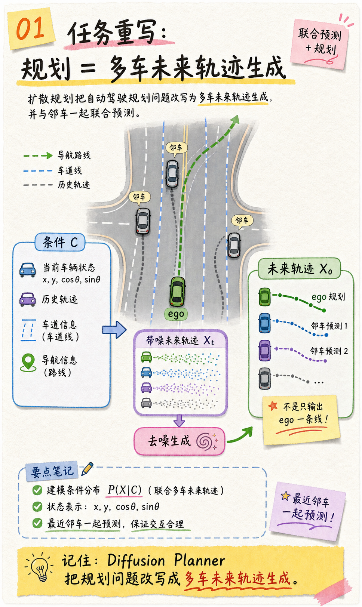
读图要点
- 条件 C 包含当前状态、历史轨迹、车道和导航。
- 输出 X0 同时包含 ego planning 和邻车 prediction。
- 状态用 x, y, cosθ, sinθ，方便连续轨迹建模。
02 为什么不用传统 BC + 后处理
传统 imitation/BC 容易平均化多模态行为，遇到 OOD 场景输出不稳，很多方法再依赖 rule-based refinement 补救。
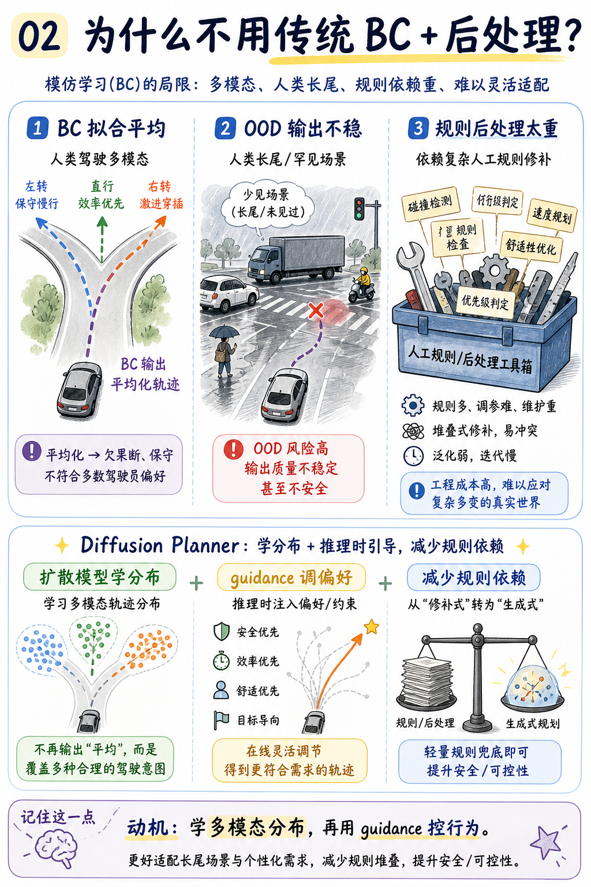
读图要点
- 多模态不是噪声，而是驾驶行为本身的属性。
- 规则后处理能补救，但工程维护成本重。
- Diffusion Planner 的方向是学分布，再在采样时调偏好。
03 总体架构：条件编码 + DiT 去噪 + guidance
模型主线是：向量化场景条件先编码成上下文，带噪未来轨迹作为 decoder 输入，再由 DiT 在条件约束下逐步还原干净轨迹。
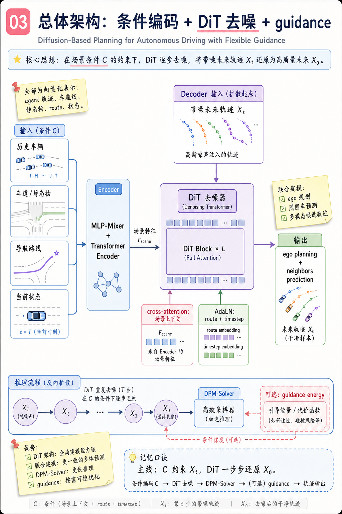
读图要点
- Encoder 负责 agents、lanes、static objects 的场景上下文。
- Route 和 timestep 进入 AdaLN 条件。
- DPM-Solver 与 guidance 只发生在推理采样链路。
04 数据表示与预处理：让扩散更好学
论文的性能不只来自网络结构，数据增强、扰动插值、ego 坐标系和 z-score normalization 对训练稳定性很关键。
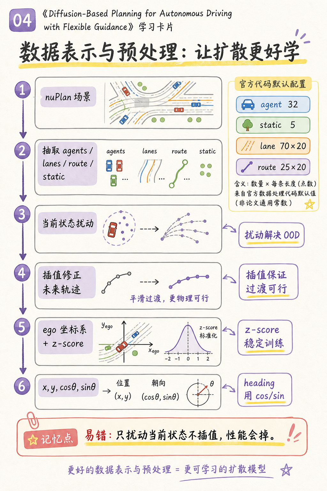
读图要点
- 扰动 current state 后还要插值修正 future，避免不物理的跳变。
- heading 用 cos/sin 表示，避免角度 wrap 问题。
- 图中 agent/static/lane/route 数量是官方代码默认配置。
05 主干网络与编码器：稀疏向量到上下文 token
实现里没有图像 CNN 主干，而是用 MLP-Mixer 与 Transformer 处理向量化历史、车道和静态物。
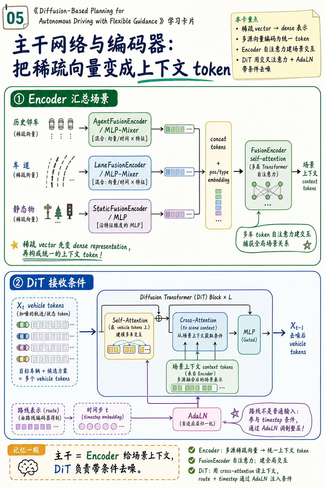
读图要点
- AgentFusionEncoder 和 LaneFusionEncoder 将稀疏序列压成 dense token。
- FusionEncoder 用 self-attention 建模全局场景交互。
- DiT 通过 cross-attention 读取 scene context。
06 车辆信息集成：当前状态如何约束未来轨迹
当前状态是未来轨迹生成的起点约束。实现中会把 ego 与预测邻车的 current state 放到序列第 0 点。
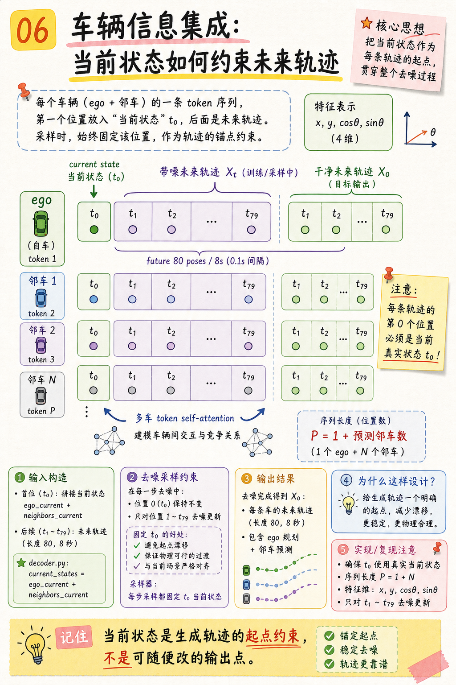
读图要点
- 采样过程中 t0 被强制写回，减少轨迹起点漂移。
- P 表示 ego 加上 predicted neighbors。
- 多车 self-attention 让车辆 token 之间建交互。
07 历史车辆融合：稀疏历史轨迹如何压成 dense token
历史邻车是 B×P×V×D 的序列。AgentFusionEncoder 先 mask 空邻车，再用 channel/token MLP 与 MixerBlock 提取紧凑表示。
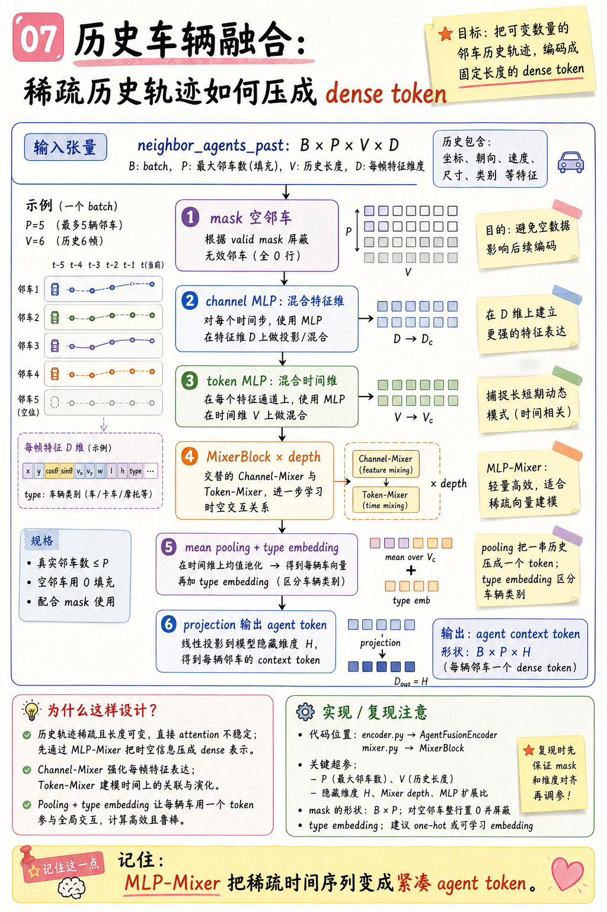
读图要点
- channel MLP 混合特征维，token MLP 混合时间维。
- mean pooling 把一段历史压成一个 agent token。
- type embedding 补充车辆类别信息。
08 车道与静态物融合：地图如何变成场景上下文
地图在这篇论文中主要以 vector set 进入模型，LaneFusionEncoder 结合 lane points、speed limit、traffic light 等信息。
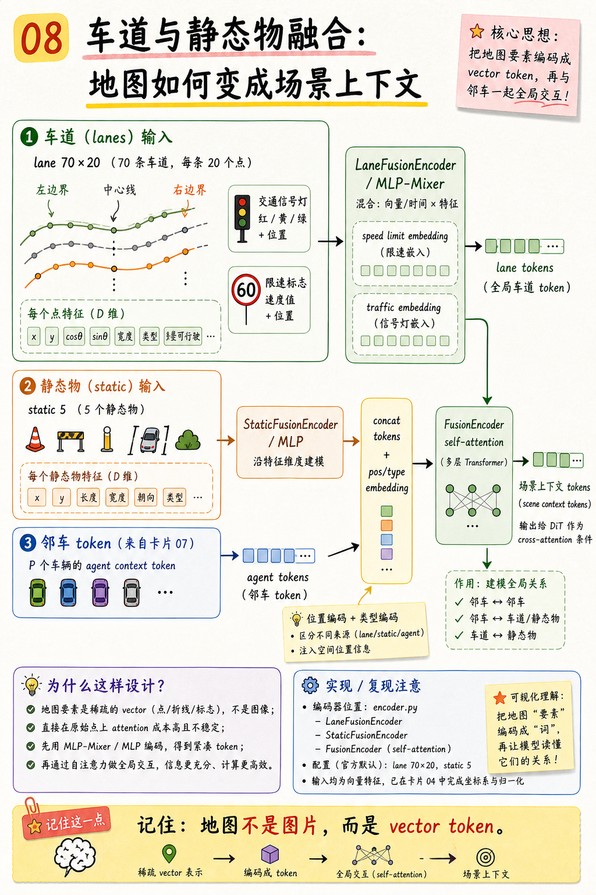
读图要点
- LaneFusionEncoder 使用 MLP-Mixer 编码车道点序列。
- StaticFusionEncoder 用 MLP 编码静态物。
- pos/type embedding 帮助 token 保留类别和位置。
09 导航信息融合：route 如何进入 timestep condition
导航路线不是普通输出，而是生成过程的条件。RouteEncoder 的输出与 timestep embedding 相加，进入 AdaLN 调制。
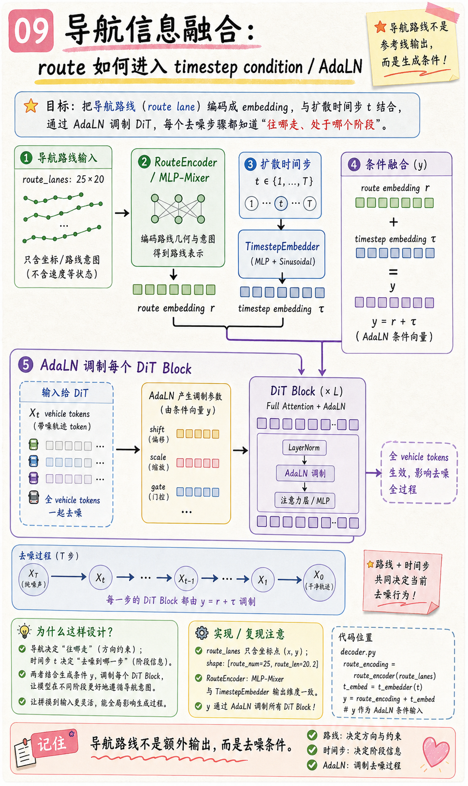
读图要点
- Route lane 代表意图路线。
- timestep 代表当前去噪阶段。
- 二者合成 y 后通过 AdaLN 影响 DiT block。
10 DiT Block 细节
DiT block 同时做三件事：vehicle tokens 内部交互、读取 encoder 场景上下文、接受 route+timestep 的 AdaLN 调制。
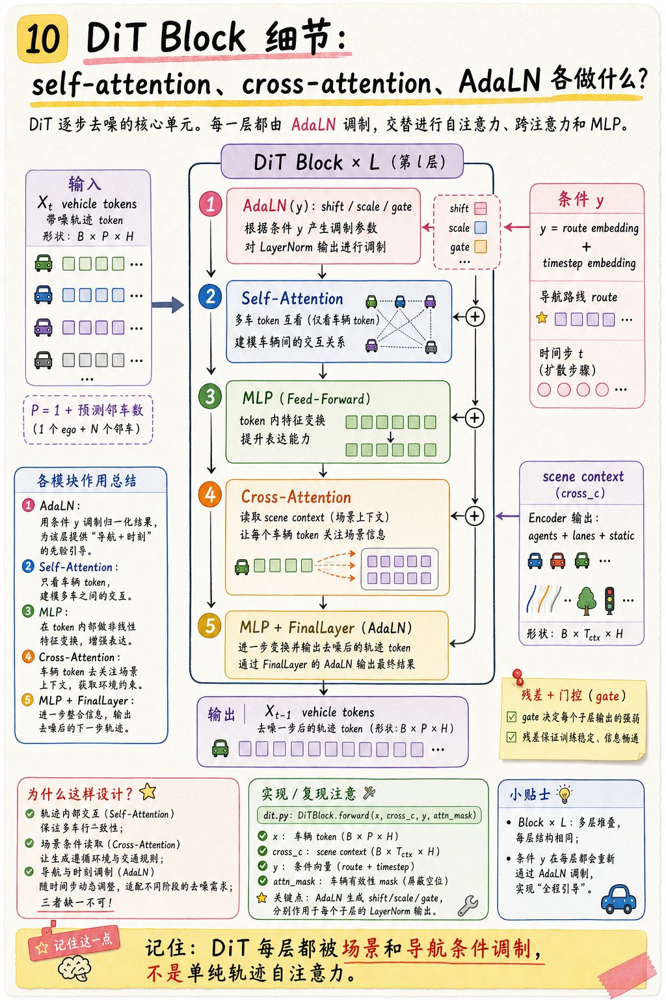
读图要点
- self-attention 建模多车 token 之间的关系。
- cross-attention 从 scene context 中读取条件。
- AdaLN 用 shift/scale/gate 调制网络层。
11 预测头与联合输出
Decoder 最终输出 B×P×80×4 的未来状态，其中 P 的第一项是 ego，后续是被预测邻车。
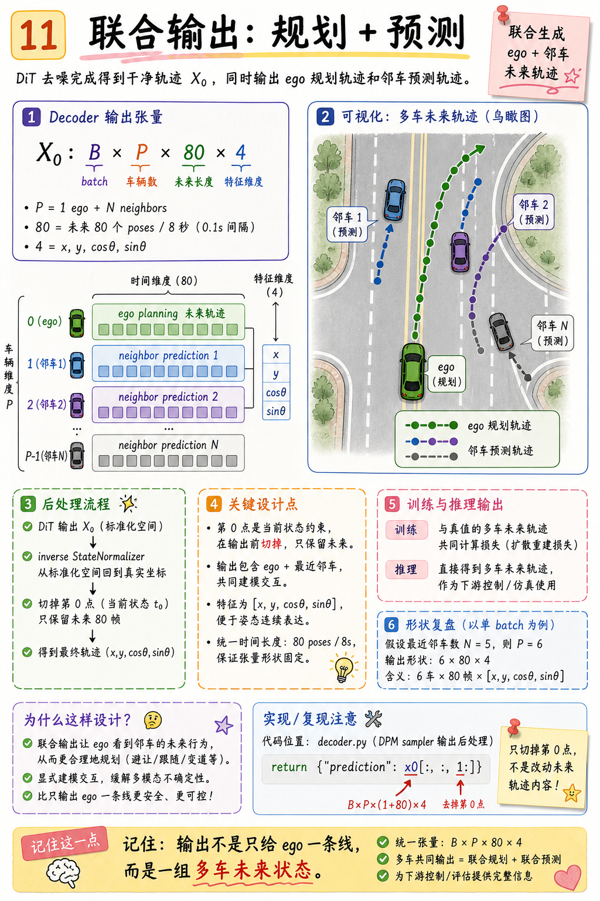
读图要点
- current state 第 0 点在输出未来时被切掉。
- inverse StateNormalizer 把标准化状态转回真实坐标。
- 联合输出是模型处理交互的关键形式。
12 扩散目标：从噪声恢复轨迹分布
训练时随机采样 t 和噪声 z，把真实未来轨迹加噪为 Xt，再让模型在条件 C 下恢复 X0 或 score。
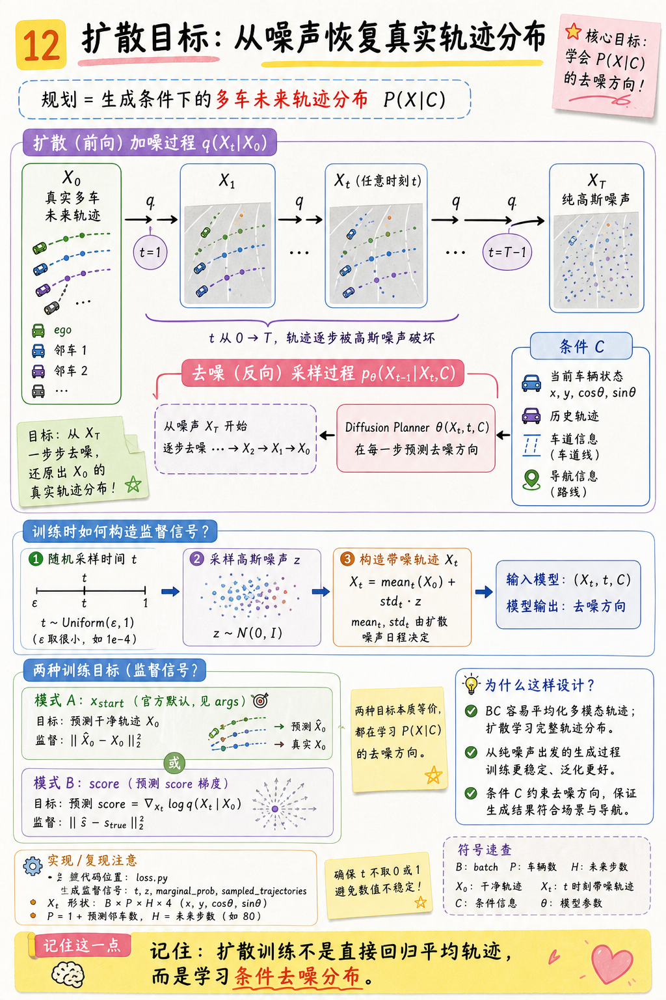
读图要点
- 默认 diffusion_model_type 是 x_start。
- score 模式也在代码中保留。
- 目标是学习 P(X|C) 的条件去噪方向。
13 Loss 拆解
训练 loss 由邻车预测 loss 与 ego planning loss 组成。它们来自同一个 dpm_loss，只是切片和 mask 不同。
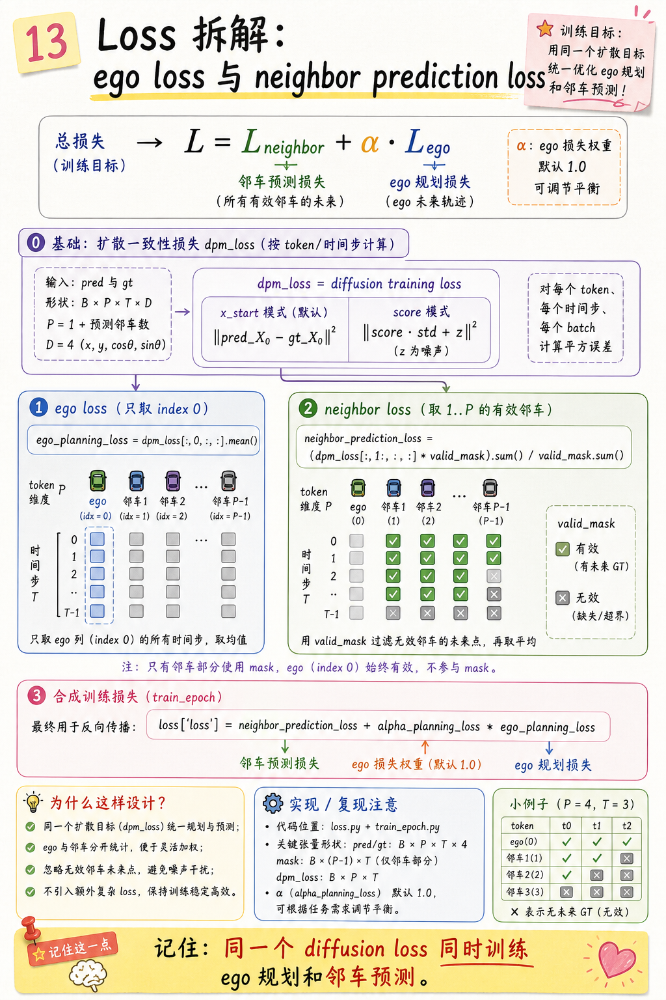
读图要点
- ego_planning_loss 取 dpm_loss 的第 0 个 agent。
- neighbor_prediction_loss 只统计 valid neighbor future。
- guidance 不是训练 loss，而是推理时采样偏置。
14 Mask 与归一化
mask 和 normalizer 是复现时最容易被忽略的细节。它们不一定导致代码报错，但会直接污染训练目标和闭环结果。
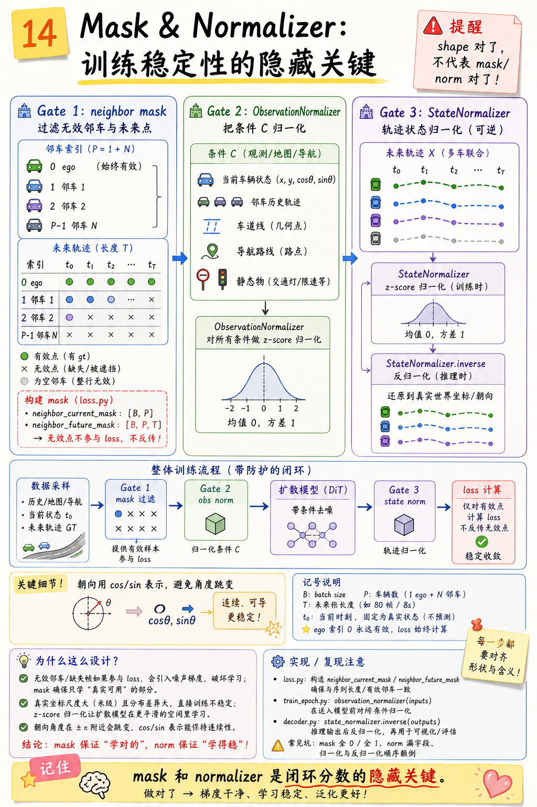
读图要点
- 无效邻车不能进入 neighbor loss。
- ObservationNormalizer 和 StateNormalizer 分别对应条件与轨迹。
- heading 的 cos/sin 表示减少角度不连续。
15 训练 Forward 闭环
一次训练 batch 会经历数据增强、heading 转换、归一化、加噪、模型前向和 loss 计算。
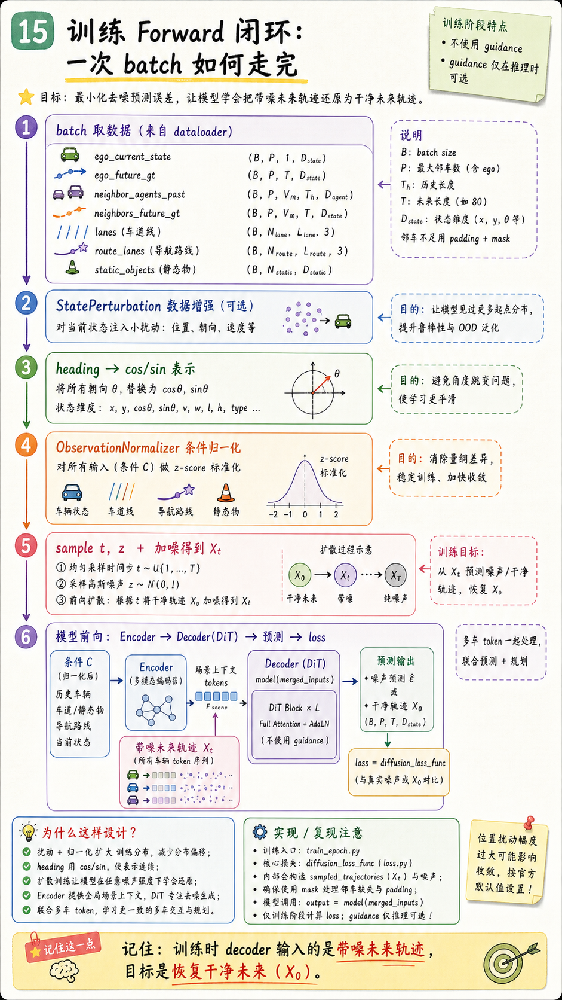
读图要点
- StatePerturbation 帮助模型抵抗 OOD 起点。
- diffusion_loss_func 构造 sampled_trajectories 与 diffusion_time。
- Encoder 和 Decoder 在训练时共同接受梯度。
16 Backward / Update
训练工程侧使用 AdamW、梯度裁剪、EMA、scheduler 和 DDP。它们不是论文创新点，但决定训练是否稳定。
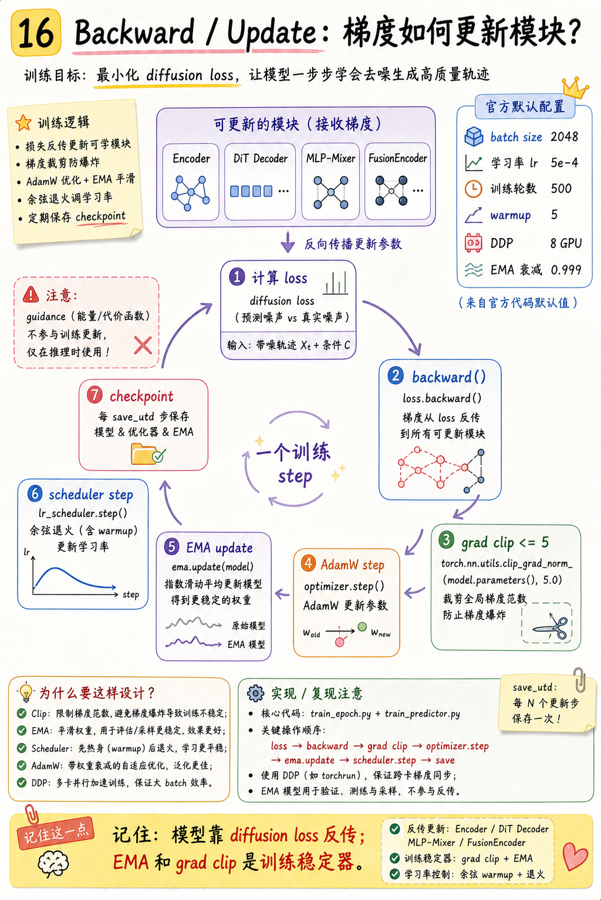
读图要点
- clip_grad_norm_ 上限为 5。
- EMA decay 为 0.999。
- 默认 batch size、lr、epoch 等来自 train_predictor.py。
17 推理采样：DPM-Solver 从 xT 到 x0
推理时从 current state 加随机未来噪声开始，DPM-Solver++ 用少步数还原轨迹，并持续固定当前状态。
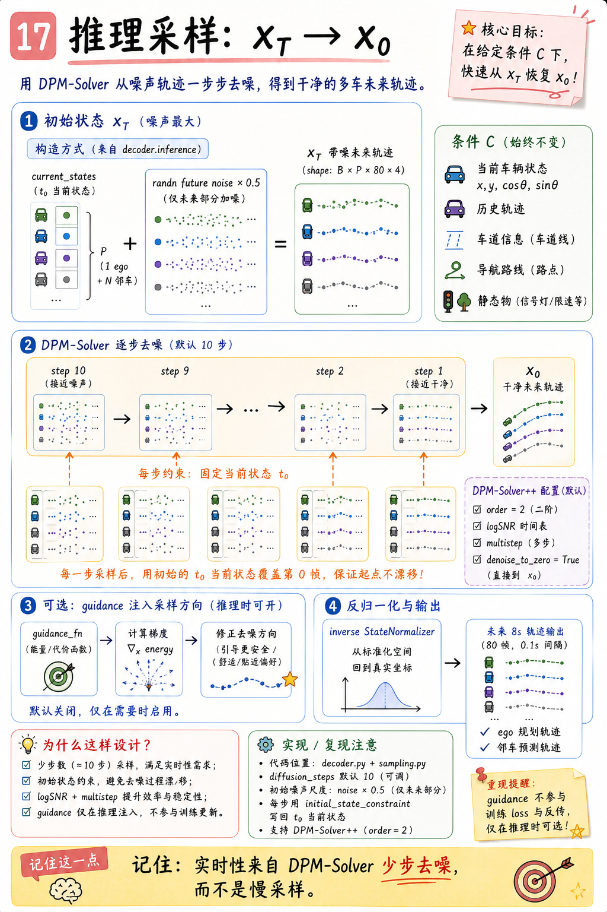
读图要点
- 默认 diffusion_steps 为 10。
- initial_state_constraint 每步修正 t0。
- guidance_fn 可以接入 model wrapper 改变采样方向。
18 Classifier Guidance 原理
Guidance 的核心是用可微 energy 的梯度改变扩散采样方向。它不改模型参数，而是在推理时引导生成。
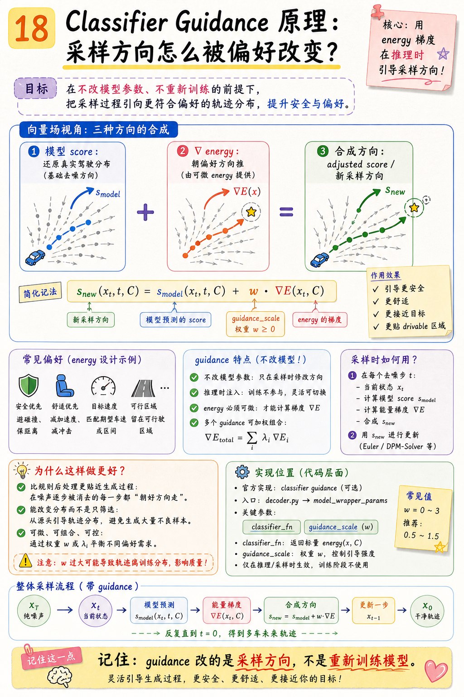
读图要点
- base score 保持模型原本驾驶分布。
- energy gradient 推向安全、舒适、速度等偏好。
- 多个 guidance 可以组合，但尺度需要谨慎。
19 Guidance Energy 设计
论文列出速度、舒适性、碰撞、可行驶区域等可微评价函数。它们可以被组合成推理时的偏好约束。
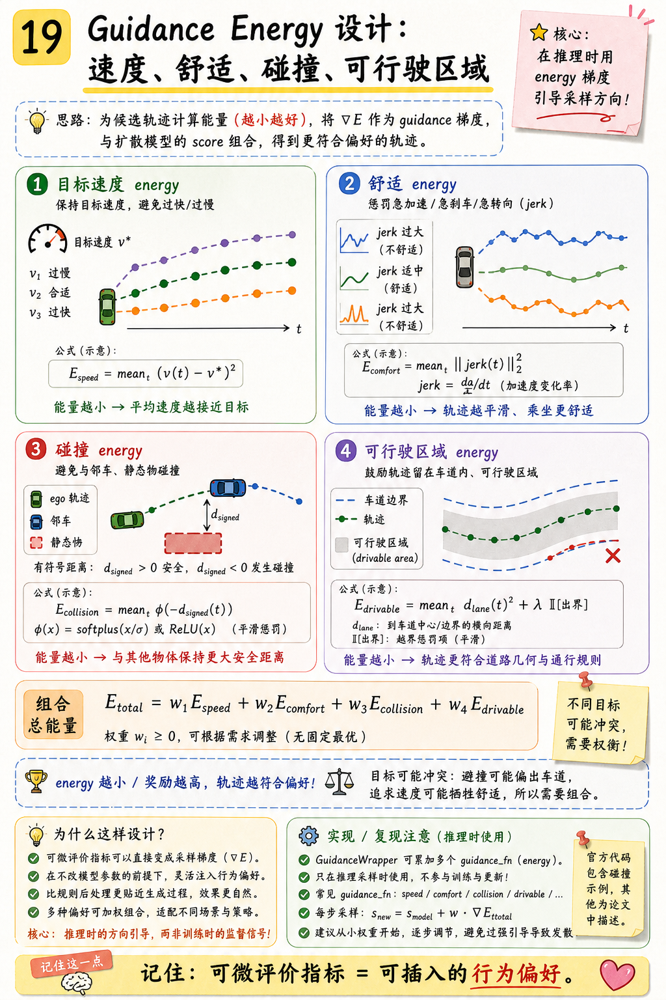
读图要点
- 速度 guidance 对齐目标速度。
- 舒适 guidance 关注 jerk/加速度等超限。
- 碰撞和可行驶区域 guidance 常需要组合，避免单目标副作用。
20 Collision Guidance 实现
官方代码示例实现了 collision guidance：从预测轨迹构造车辆 bbox，计算 signed distance，再通过 autograd 得到推开轨迹的梯度。
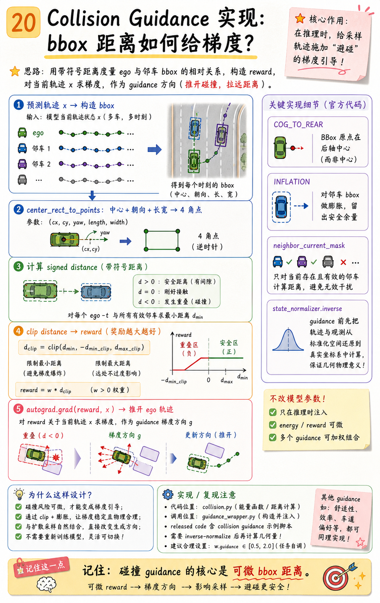
读图要点
- center_rect_to_points 把中心状态转成四角点。
- signed distance 衡量 ego 与邻车 rectangle 距离。
- GuidanceWrapper 会先做 inverse normalization。
21 Guidance 工程接入
新增 guidance 的工程入口很薄：写一个可微 guidance 函数，注册到 GuidanceWrapper，再用 guidance planner config 运行。
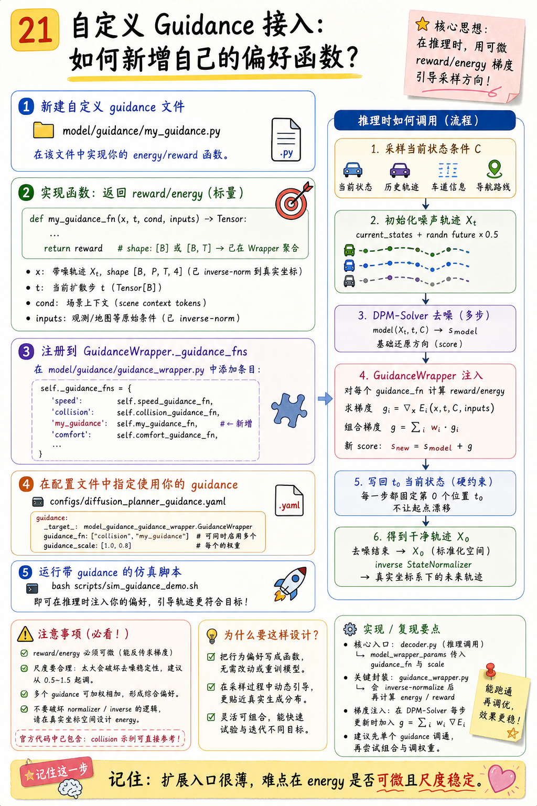
读图要点
- 函数签名接收 x、t、cond、inputs。
- 输出 reward/energy，必须能对 x 求梯度。
- 难点通常在尺度、可微性和 normalizer 配对。
22 多模态行为
扩散模型能表达同一个起点下的多种合理未来。无导航时可以出现左转、直行、右转；有导航时则被 route condition 选中。
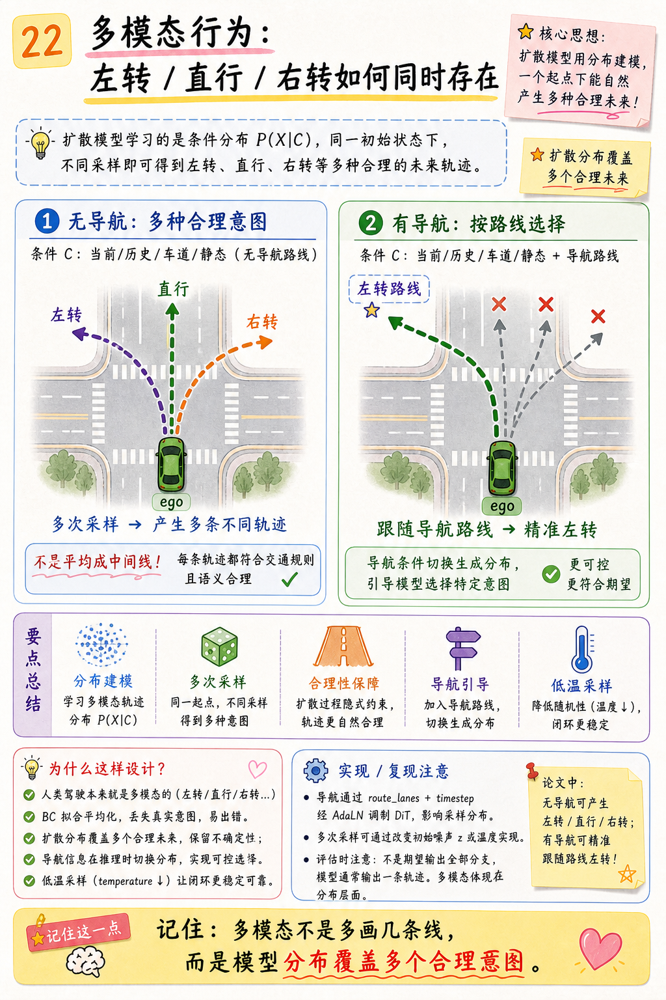
读图要点
- 多模态不是输出抖动，而是多个合理意图。
- 导航通过 AdaLN 条件影响去噪分布。
- 低温采样让闭环执行更稳定。
23 实验主结果
nuPlan 上，Diffusion Planner 不加 refinement 的学习式输出已经很强；加现有 refinement 后还能进一步提升。
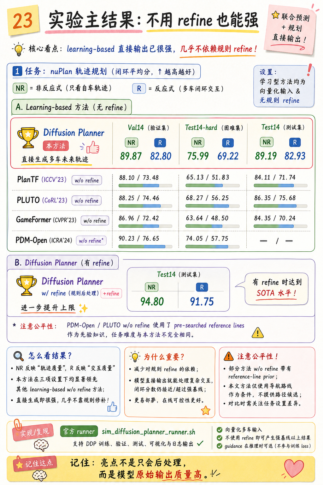
读图要点
- NR/R 分别表示 non-reactive 与 reactive。
- 结果重点是直接模型输出质量，而不是只靠后处理。
- 对比时要注意 reference-line prior 等输入先验差异。
24 Guidance 案例效果
目标速度、舒适性、碰撞和可行驶区域 guidance 体现了推理时行为可调的价值。
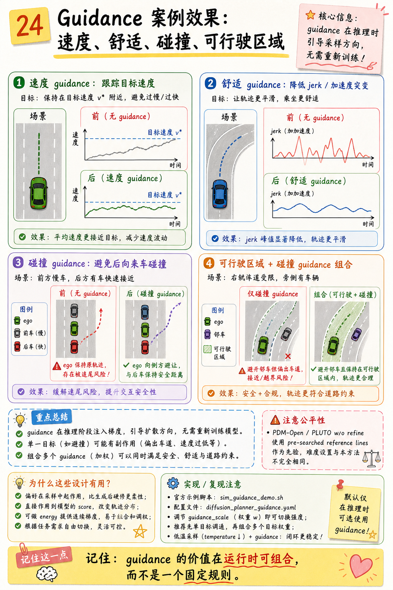
读图要点
- 目标速度 guidance 可以调节速度范围。
- 舒适 guidance 可以缓解 jerk 异常。
- collision 与 drivable guidance 组合能处理单目标冲突。
25 消融：训练设计为什么重要
消融说明 augmentation、interpolation、z-score、current state 处理都不是小细节，去掉后闭环分数会明显下降。
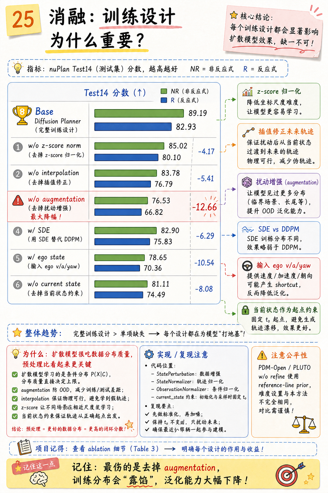
读图要点
- 去掉 augmentation 的下降最大。
- 只扰动当前状态但不插值，会造成不物理过渡。
- 过多 ego 状态信息可能形成 shortcut。
26 消融：推理步数和低温采样
推理不只是“多采几步”。闭环规划同时受质量、稳定性和实时性约束，DPM-Solver 的少步采样是关键工程点。
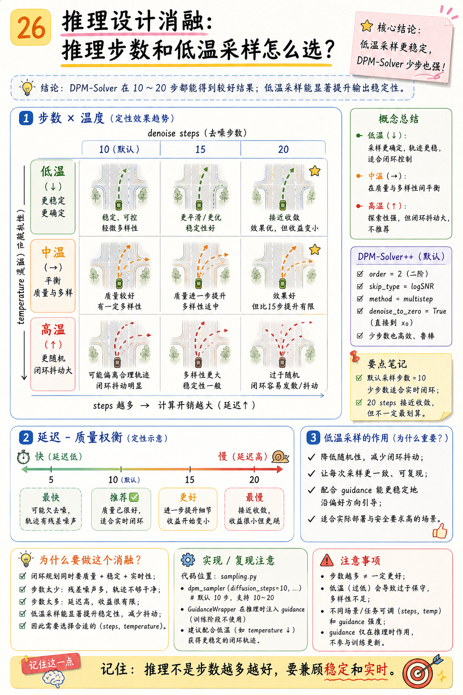
读图要点
- 低温采样提升轨迹稳定性。
- 10-20 steps 通常是质量与耗时的平衡区间。
- 采样器参数错误会让闭环表现与训练质量脱节。
27 代码实现映射
读官方仓库时，不要从 simulation runner 直接猜模型。先按 Encoder、Decoder、Loss、Sampling 四条主线建立映射。
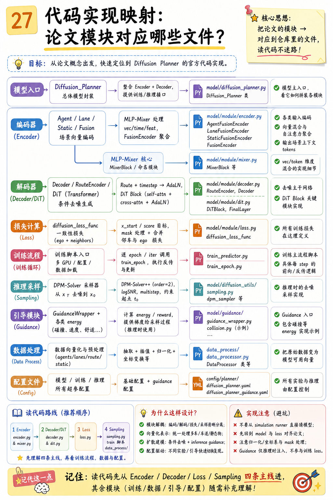
读图要点
- model/diffusion_planner.py 是入口。
- encoder.py、decoder.py、dit.py 是结构主线。
- loss.py、sampling.py、guidance/ 是训练和推理机制主线。
28 复现风险清单
这篇论文最容易错的不是“代码能不能跑”，而是 mask、normalizer、current-state constraint、sampler 和 guidance 尺度是否真的对。
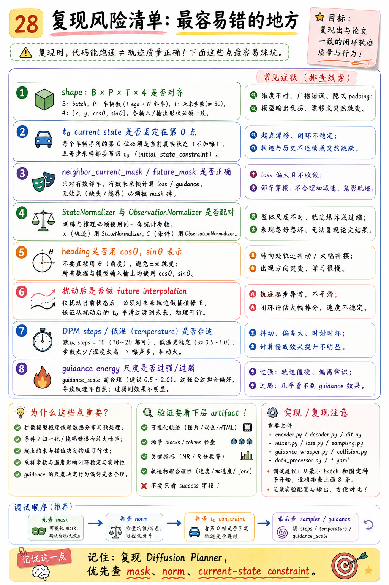
读图要点
- 先查 B/P/T/4 shape，再查 neighbor mask。
- StateNormalizer 与 ObservationNormalizer 不能混用。
- Guidance energy 过强/过弱都会破坏采样。